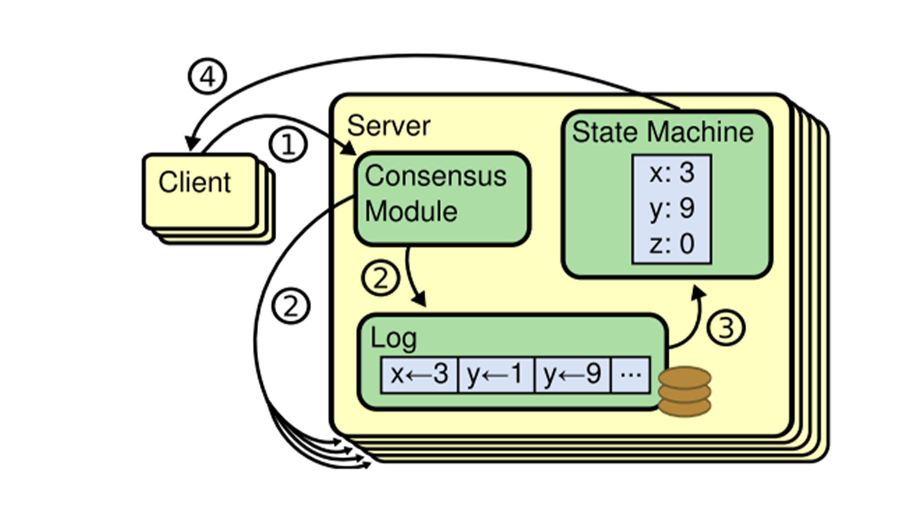

Raft Consensus Algorithm


Go
MIT 6.5840
Distributed Systems
4 Weeks
PROJECT OVERVIEW
Description
Implementation of the Raft consensus algorithm as part of MIT's 6.5840 Distributed Systems course. Raft is a distributed consensus protocol designed to be easy to understand and implement, ensuring that multiple servers agree on a replicated log even in the presence of failures such as crashes and network partitions.
Core Features
- Leader election with randomized timeouts to prevent split votes
- Log replication ensuring consistency across all nodes
- State machine transitions between follower, candidate, and leader states
- Safety and consistency guarantees under network partitions
- Crash recovery and fault tolerance mechanisms
Technical Implementation
- Implemented as a goroutine-based state machine in Go
- Used channels for inter-goroutine communication and signaling
- RPC-based communication between distributed nodes
- Comprehensive test suite simulating network failures and partitions
- Handles edge cases like leader crashes, network splits, and log inconsistencies
Algorithm Components
- Leader Election: Ensures exactly one leader is elected safely using randomized election timeouts
- Log Replication: Leader receives client requests and replicates entries to follower nodes
- Safety: Guarantees that committed entries are never lost and logs remain consistent
- Persistence: Critical state persisted to survive crashes and maintain correctness
Testing & Validation
- Passed all MIT lab test cases including unreliable network conditions
- Tested scenarios: leader crashes, network partitions, log conflicts, and recovery
- Verified correctness under concurrent operations and failure scenarios
- Performance tested with multiple nodes and high request volumes
Key Challenges Solved
- Race conditions in leader election and log replication
- Handling network partitions and split-brain scenarios
- Ensuring log consistency during leader changes
- Optimizing performance while maintaining correctness guarantees